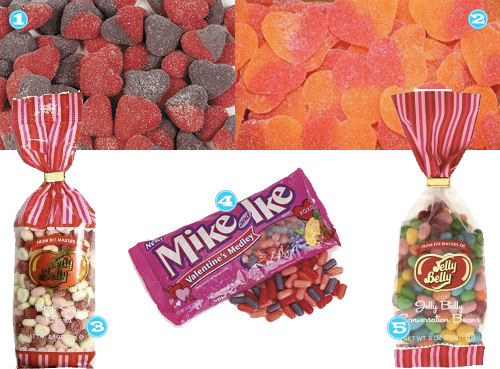

Damn this candy will knock your socks off! Only 120 calories. The only problem is that I don’t want to stop with one 🙂
Amazon, Skinny Cow Dreamy Clusters

Damn this candy will knock your socks off! Only 120 calories. The only problem is that I don’t want to stop with one 🙂
Amazon, Skinny Cow Dreamy Clusters
The food on Pinterest, you guys, it’s just not good if you are trying to lose weight. Â Just letting you know that now… Enter at your own risk.

What recipes have you drooled over lately?

So I gave y’all some ideas for Girly Stocking Stuffers yesterday. Â Here’s my version of the dude edition.

We thought we’d do a little series on what each of us routinely makes or has made for us (ha!) at the holidays in the form of treats. Â I mean these are items that, if not made, would mean it just isn’t Christmas.
First up: Fantasy Fudge. Â This is the marshmallow creme type of fudge. I could literally eat the entire pan.
3 cups sugar
3/4 cup margarine
2/3 cup evaporated milk
1 12-oz. (340 g) package semi-sweet chocolate chips
1 7-oz. (198 g) jar Kraft Marshmallow creme
1 cup chopped nuts
1 teaspoon vanilla extract
Combine sugar, margarine and milk in heavy 2-1/2 quart saucepan; bring to full rolling bail, stirring constantly. Continue boiling 5 minutes over medium heat, stirring. Remove from heat, stir in chocolate till melted. Add marshmallow creme, nuts & vanilla beat till blended. Pour into greased 13 x 9-inch baking pan. Let cool and cut into 1-inch squares. Eat entire pan.
Next is Leche Quemada, which is a cinnamon candy that is similar in texture to a praline. Â I have never made this on my own because it’s actually pretty tough to make (lots of arm breaking stirring), so generally my mom and I will make this together and take turns with the stirring. Â Then when it’s time to drop these on wax paper it definitely takes two to get them out before the mixture hardens up. Â But OH SO WORTH IT. Â Again, I could make myself sick from these.
12 oz. cans evaporated milk
2 12 oz. cans water
5 cups sugar
6 cinnamon sticks
Mix the first three (3) ingredients together in a large pot until the sugar has dissolved. Add the cinnamon sticks and place over low heat. For a creamier consistency start with a low heat and gradually raise to a medium heat. Stir constantly until mixture boils. Boil until candy reaches soft ball stage (234-240 degrees). As candy reaches soft ball stage it will need to be watched carefully and stirred. At this stage you should also remove the cinnamon sticks. Remove from heat and beat until candy around the edge of the pan begins to lose it’s gloss. Quickly drop by teaspoon onto waxed paper. A pecan half may be added if desired.
My final treat is Wedding Ring Cookies or Rosquitas. These are also sorta time consuming, but oh so yummy. Â The picture shows crescents but we make them into rings. They are very light cookies and again you can eat about eleventh billion.
1/2 c water
2 3″ cinnamon sticks, broken into pieces
1/4 t. anise seed
4 c. all-purpose flour
1/4 t. salt
1/8 t. baking powder
1/2 c. lightly salted butter or margarine, at room temperature
1/2 c. vegetable shortening at room temperature
1/2 c. granulated sugar
About 1 cup confectioners’ sugar
In a small saucepan bring water, cinnamon and anise to a simmer over moderate heat. Let simmer 12 to 15 minutes, until 1/4 cup liquid remains. Let cool and then strain; discard seeds and cinnamon. Sift flour with salt and baking powder. In a large bowl beat butter with shortening and granulated sugar until smooth and creamy. Add flour mixture 1 cup at a time, alternating with the cooled, spiced water. Mix to a smooth, stiff dough. (If dough is not quite pliable enough to shape, work in 2 or 3 tablespoons water.)
To shape cookies: Take 1/4 teaspoon of the dough and roll into small, rope-like strips in the palm of your hand. Then twist the strips around your little finger and fasten ends. Place rings of dough about 1/2 inch apart on ungreased baking sheets. Heat oven to 350 degrees F. Bake cookies 7 – 10 minutes, until lightly browned on bottom. Transfer to a wire rack to cool. Put confectioners’ sugar in a paper bag, add a batch of the cookies and shake to coat. Tip them into a strainer to remove excess sugar.
So what do you make each year?

Are you the type that buys your Halloween early to get the best selection and then you end up eating most of it yourself and have to go buy more to actually hand out to the kids? Â Yeah we are too. Â These are our favorite Halloween candies, or just what we want to be eating right here right now!
What is going in your belly this Halloween?
Have you ever made candy in a crockpot? I had heard rumors, hearsay, unconfirmed reports, allegations that this sort of thing was possible, but I had never tried. So here’s the recipe that I tried:
In a 4qt crock pot, pour in the peanuts, then German’s sweet chocolate, then chocolate chips, then almond bark. Turn on Low for 3 hours. Don’t touch it during that time. When the 3 hours is up, stir it up really good. This is the point where I looked at it and it was all still looking like it was in its block form and I was thinking SON OF A BITCH this is gonna be hard to stir! It’s not. Trust me. Then simply spoon it into regular cupcake holders or mini depending on what size candies you want. Let them harden and then remove them from the holders. They’ll look sorta Reese’s Cup-ish on the bottom but they taste more like HEAVEN!
Nothing is more important in this world than all these baby mammas. Â Either you have one, know one, or are one yourself. Â Its that time again and I’ve rounded up a few things that I think would be too cool to honor them for all they are: Â BADASS.

When I crack open those plastic Easter eggs on Easter morning, this is what I hope I find!
If you decide to treat me with something sweet this Valentines day, please remember I’m not a huge lover of sweets and only have a select few faves!

Dare I say it?? I’m not a chocolate loving girl. Fine. It’s out in the open. Judge if you wish. BUT, that doesn’t mean I don’t enjoy sugary treats on Valentine’s Day! Â Here are some non-chocolate options for those girls who dare to live on the wild side.



Recent Comments